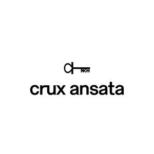

Trade Mark Journal No.2025/011 14 March 2025
UK00004167434 1 March 2025 (3,5,29,30,32)

- Class 3
- Bath preparations, not for medical purposes; Chemical cleaning preparations for household purposes; Polishing wax; Sharpening preparations; Perfumery; Cosmetic preparations for skin care; Toothpaste; Potpourris [fragrances]; Shampoos for pets [non-medicated grooming preparations]; Air fragrancing preparations.
- Class 5
- Medicated candies; Syrups for pharmaceutical purposes; Collyrium; Medicines for alleviating constipation; Medicinal tea; Cod liver oil; Pharmaceutical preparations for skin care; Dietetic beverages adapted for medical purposes; Medical preparations for slimming purposes; By-products of the processing of cereals for dietetic or medical purposes; Dietary fiber; Food supplements; Mineral nutritional supplements; Mineral dietary supplements; Appetite suppressants for medical purposes; Slimming pills; Antioxidant pills; Albumin dietary supplements; Enzyme dietary supplements; Protein dietary supplements; Vitamin supplement patches.
- Class 29
- Meat; Fish, not live; Fruit-based snack food; Lyophilized vegetables; Fruit salads; Edible fats; Nuts, prepared; Truffles, preserved; Jellies, jams, compotes, fruit and vegetable spreads; Canned vegetables.
- Class 30
- Cookies; Peppermint sweets; Candies; Coffee; Cereal preparations; Chewing gum; Meal; Fondants [confectionery]; Gluten prepared as foodstuff; Nutmegs [spice]; Pralines; Stick liquorice [confectionery]; Fruit jellies [confectionery]; Tea-based beverages; Cereal-based snack food; Candy decorations for cakes; Buckwheat, processed; Fruit confectionery; Mints for breath freshening; Coconut macaroons.
- Class 32
- Non-alcoholic fruit extracts; Non-alcoholic fruit juice beverages; Whey beverages; Fruit juice; Waters [beverages]; Lithia water; Must; Lemonades; Vegetable juices [beverages]; Non-alcoholic beverages; Sarsaparilla [non-alcoholic beverage]; Fruit nectars, non-alcoholic; Isotonic beverages; Non-alcoholic honey-based beverages; Smoothies; Aloe vera drinks, non-alcoholic; Protein-enriched sports beverages; Non-alcoholic beverages flavored with coffee; Soft drinks; Energy drinks.
Hong Kong QI Yuan International Limited
Representative: Vicky Zhang